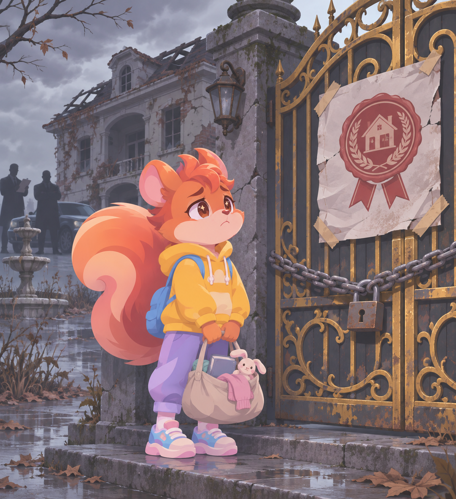
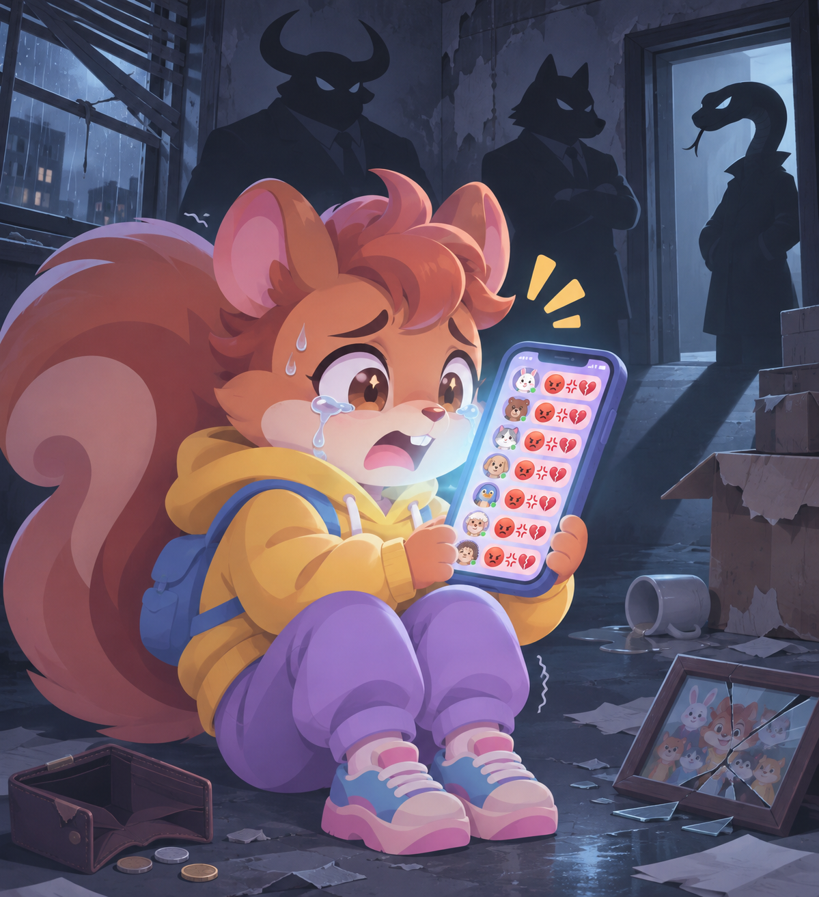
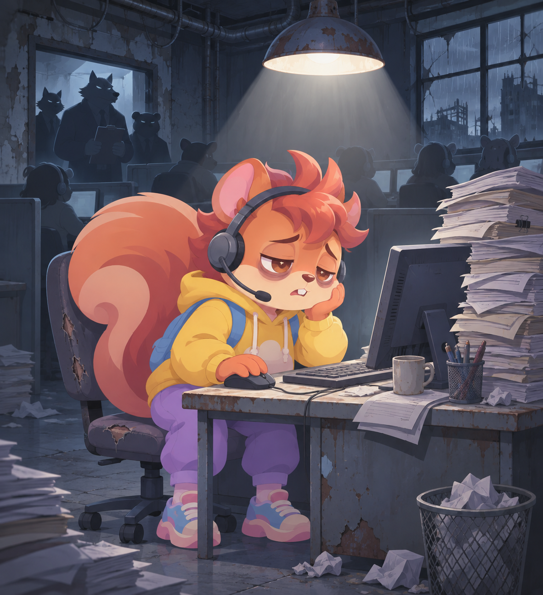
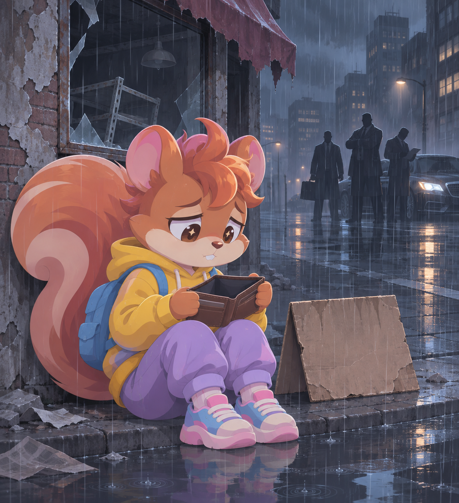

귀여운 캐릭터, 잔혹한 결과
캐릭터는 귀엽게 두고, 파산의 결과는 실제처럼 잔인하게 보여 줍니다. 피나 신체 훼손 같은 그래픽 묘사는 하지 않고, 압류·추심·망신·노숙 같은 현실의 결과로 무게를 만듭니다.

압류 고지문이 붙은 대문 앞, 짐 한 봉지
"3억 원짜리 집에서 200만 원을 못 내 경매로 쫓겨났습니다."

어두운 방, 적의에 찬 메시지가 쏟아지는 휴대폰
"온 숲속 단톡방에 내 채무가 생중계되었습니다."

차가운 조명 아래 헤드셋, 끝없이 쌓인 서류
"헤드셋을 끼고 밤새 전화기를 듭니다."

비 오는 거리, 빈 지갑과 종이 팻말
"사채 이자를 따라잡을 수 없었습니다."
확인할 점: 잔인함이 실제처럼 읽히는지, 그래픽 수위가 과하지 않은지, 캐릭터가 귀여움을 유지하는지.
괜찮으면 이 규칙(귀여운 캐릭터 + 차가운 배경 + 현실의 결과)을 엔딩 일러스트 기준으로 고정하고 대표 엔딩 10장을 뽑겠습니다.